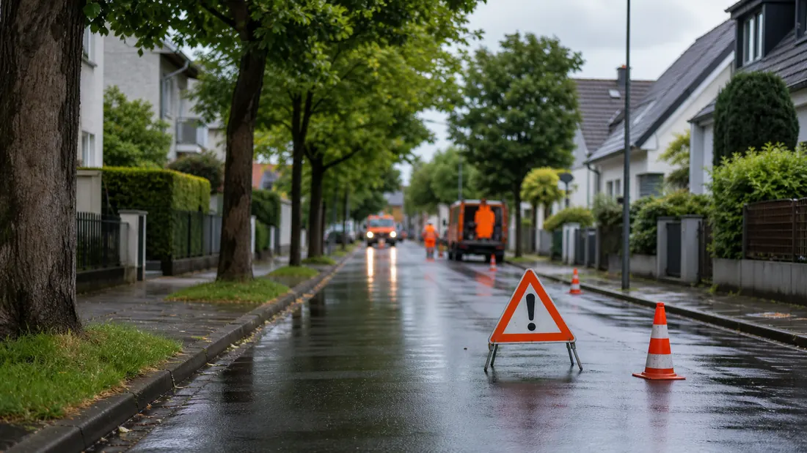

Tagesarchiv
48 regionale Meldungen
Alle Karten öffnen die jeweilige Originalmeldung.

Hessen Aktuell
Regionale Meldungen dieses Tages, gesammelt aus den aktiven Quellen und nach Stadt sowie Thema lesbar.
Tagesarchiv
Alle Karten öffnen die jeweilige Originalmeldung.
Meldungen
Kassel · Politik
Es wird gepflanzt, gesät und gebaut: Im Wahlebachpark im Kasseler Osten tut sich was. Schon seit dem Frühjahr wird der Park vergrößert. Jetzt stehen den Besucherinnen und Besuchern auch Sportgeräte sowie neue Sitzgelegenheiten zur Verfügung.
Kassel · Politik
Auf dem Sportcampus Süd beginnen die nächsten Arbeiten. Bis zum Frühsommer 2028 entsteht rund um die Probonio Arena und das Auestadion ein Standort, der Sport, Veranstaltungen, Mobilität und Nachhaltigkeit miteinander verbindet.
Kassel · Veranstaltungen
Klettern und Wandern - die Schwerpunkte des Deutschen Alpenvereins sind auch Bestandteil des städtischen Veranstaltungsprogramms für Menschen ab 60 Jahren „Neugierig und aktiv bleiben!“.
Kassel · Politik
Aktionstag in den Kreiskliniken setzt Händedesinfektion in den Fokus Weitere Details, Hintergründe und vollständige Angaben stehen in der verlinkten Originalmeldung.
Kassel · Politik
Kassel · Politik
Kassel · Politik
Kassel · Politik

Kassel · Polizei
Am 16.09.2026 gab es die nordhessische Premiere zum Format „Musik trifft Prävention“ in Bad Arolsen. Knapp 300 Bürgerinnen und Bürger waren der Einladung der Stadt Bad Arolsen gefolgt.

Kassel · Polizei
Großer Andrang, viele tolle Gespräche und starkes Interesse an den verschiedenen Berufen der Einsatzkräfte: Darauf kann die Blaulichtfamilie nach der Veranstaltung in Kassel zurückblicken.

Kassel · Polizei
Die Kasseler Polizei und die Staatsanwaltschaft Kassel ermitteln aktuell in drei mutmaßlichen Erpressungsfällen, bei denen eine Tätergruppe von verschiedenen Geschäftsinhabern Geldsummen forderten.

Kassel · Polizei
Im Rahmen der Aktion "Blitz for Kids" hat die nordhessische Polizei zusammen mit Schülerinnen und Schülern Geschwindigkeitskontrollen im Umfeld von Schulen und Kitas durchgeführt.
Kassel · Polizei
Unter dem Motto "Blitz für Kids" führte der Verkehrsdienst aus Korbach zusammen mit 10 Schülerinnen und Schülern aus Bad Wildungen am vergangenen Donnerstagvormittag Geschwindigkeitskontrollen durch.
Frankfurt · Polizei
Frankfurt (ots) - Die seit Freitag (25. September 2026) vermisste 81- jährige Christine T. aus Frankfurt / Sossenheim wurde angetroffen. Die Fahndung wird hiermit zurückgenommen. Rückfragen bitte an: Polizeipräsidium Frankfurt am Main ...
Frankfurt · Verkehr
Frankfurt (ots) - (ma) Wie den Medien bereits bekannt, kam es in den frühen Morgenstunden eines Donnerstags (4. Juni 2026) in der Liebfrauenstraße Ecke Zeil zu einer gefährlichen Körperverletzung. ...
Frankfurt · Polizei
Frankfurt (ots) - (ma) Am Dienstagmittag (29. September 2026) sollen sich Trickdiebe unter falschem Vorwand Zugang zu einer Wohnung verschafft und hochwertigen Schmuck gestohlen haben. Die Polizei sucht Zeugen. Nach aktuellen Erkenntnissen soll ein ...
Frankfurt · Polizei
Frankfurt (ots) - (ma) Am Dienstagabend (29. September 2026) beabsichtigte eine Streife gegen 23:40 Uhr, einen schwarzen VW Golf zu kontrollieren. Der Fahrer folgte zunächst den Weisungen der Beamten und hielt im Bereich der Habsburgerallee/ ...
Frankfurt · Polizei
Frankfurt (ots) - (ma) Am frühen Mittwochmorgen (30. September 2026) soll ein 63-Jähriger auf der Straße ausgeraubt worden sein. Die Polizei bittet um Mithilfe. Nach bisherigem Ermittlungsstand soll sich der 63-Jährige gegen 03:20 Uhr ...
Frankfurt · Verkehr
Aktuelle Meldungen zu Verkehr in Frankfurt. Details stehen auf der Originalseite. Weitere Details, Hintergründe und vollständige Angaben stehen in der verlinkten Originalmeldung.
Frankfurt · Verkehr
Die Preise für Fernwärme im Tarif Wärme Classic steigen turnusgemäß zum 1. Oktober 2026 leicht an. Das wirkt sich je nach Verbrauch und angeschlossener Leistung unterschiedlich aus. Grundlage hierfür sind die vertraglich festgelegten Preisformeln.
Wiesbaden · Verkehr
Das Verkehrsdezernat arbeitet daran, die Baustellenplanung zu optimieren und verschiedene Maßnahmen besser aufeinander abzustimmen. Ein aktuelles Beispiel dafür sind die überarbeiteten Planungen in der Mainzer Straße.
Wiesbaden · Polizei
Gemeinsame Pressemitteilung des Polizeipräsidiums Westhessen und der Landeshauptstadt Wiesbaden. Weitere Details, Hintergründe und vollständige Angaben stehen in der verlinkten Originalmeldung.
Wiesbaden · Politik
Pilzesammeln liegt im Trend, doch die Vielzahl der Arten macht eine sichere Bestimmung notwendig, um Vergiftungen zu vermeiden. Zur ersten Orientierung bietet die Stadtverwaltung ab sofort unter wiesbaden.de/pilze eine Pilzdatenbank an. Sie stellt über 70 Arten vor, die im Wiesbadener Stadtwald heimisch sind.
Wiesbaden · Verkehr
In diesem Jahr veranstalten die Mädchenarbeitskreise der beiden Landeshauptstädte Mainz und Wiesbaden wieder einen Aktionsmarsch anlässlich des Weltmädchentages. Der Aktionsmarsch findet am Freitag, 2. Oktober, 16 Uhr, am Hauptbahnhof Wiesbaden unter dem Motto "Frei wie eine Wolke“ statt und richtet sich an alle.
Wiesbaden · Politik
Am Samstag, 3. Oktober, dem Tag der Deutschen Einheit, gelten in den Wiesbadener Bädern und Freizeiteinrichtungen teilweise geänderte Öffnungszeiten.
Wiesbaden · Polizei
Wiesbaden (ots) - 1. Auf Mann eingeschlagen, Wiesbaden, Dotzheim, Rheintalstraße, Montag, 28.09.2026, 22.15 Uhr (da)Am Montagabend hat ein Unbekannter in Dotzheim mehrfach auf einen Mann eingeschlagen. Kurz nach 22 Uhr gerieten die beiden Männer ...
Wiesbaden · Polizei
Wiesbaden (ots) - Drei mobile Videoschutzanhänger im Bereich Luisenplatz als weiterer Baustein der gemeinsamen Sicherheitsarchitektur, Wiesbaden, Luisenplatz, Mittwoch, 30.09.2026 (kq)Die Landeshauptstadt Wiesbaden und das Polizeipräsidium ...
Wiesbaden · Polizei
Wiesbaden (ots) - 1. 44-Jähriger nach Auseinandersetzung beraubt, Wiesbaden-Südost, Konrad-Adenauer-Ring, Sonntag, 27.09.2026, 03:00 Uhr bis 04:00 Uhr (kq)In der Nacht zum Sonntag wurde ein 44-jähriger Mann im Konrad-Adenauer-Ring von zwei ...
Wiesbaden · Polizei
Wiesbaden (ots) - (jul) Die Öffentlichkeitsfahndung nach der 75-jährigen Frau aus Wiesbaden von Samstag, 26.09.2026 um 07:11 Uhr wird hiermit zurückgenommen. Die vermisste Frau konnte wohlbehalten angetroffen werden. Es wird gebeten, das zur ...
Wiesbaden · Verkehr
Wiesbaden (ots) - 1. Trickdiebe erfolgreich, Wiesbaden, Höhenstraße, Donnerstag, 24.09.2026, 16:30 Uhr (zi) Am Donnerstagnachmittag erbeuteten zwei Täter Bargeld und Schmuck, nachdem sie sich zuvor als Telekom-Mitarbeiter ausgegeben und so ...
Darmstadt · Politik
Die Feuerwehr hat den Waldbrand westlich von Eberstadt unter Kontrolle. Weitere Details, Hintergründe und vollständige Angaben stehen in der verlinkten Originalmeldung.
Darmstadt · Politik
Wissenschaftsstadt Darmstadt präsentiert sich auf der Immobilienmesse Expo Real in München mit neuen Formaten und innovativem Messeauftritt.

Darmstadt · Sicherheit
Mit dem „Storchenquartier“ in der Lincoln-Siedlung gibt es in Darmstadt ab sofort einen zweiten Vertretungsstützpunkt für die Kindertagespflege.
Darmstadt · Polizei
Darmstadt (ots) - Nach der Sicherstellung von zwei mutmaßlich gestohlenen Fahrrädern sucht die Polizei jetzt nach den rechtmäßigen Eigentümern. Am Montag (28.9.) konnten Polizeikräfte gegen 17 Uhr im Herrngarten ein dunkelblau-schwarzes E-Bike ...
Darmstadt · Polizei
Darmstadt (ots) - Am Mittwochvormittag (30.9.) wurde der Polizei gegen 11.45 Uhr ein Waldbrand im Bereich der Buckelschneise in Richtung Pfungstadt gemeldet. Die sofort hinzugezogene Feuerwehr leitete umgehend Maßnahmen ein, um das Feuer unter ...
Darmstadt · Polizei
Darmstadt (ots) - Nachdem ein bislang unbekannter Täter am Dienstagabend (29.9.) drei Frauen im Alter zwischen 20 und 46 Jahren mit Pfefferspray besprühte, sucht die Kriminalpolizei nun nach Zeugen. Nach derzeitigem Ermittlungsstand gerieten die ...
Darmstadt · Politik
Darmstadt (ots) - Rund 2.200 Mitarbeiter der Finanzkontrolle Schwarzarbeit des Zolls waren am vergangenen Samstag im gesamten Bundesgebiet unterwegs, um bei einer Schwerpunktmaßnahme Friseur- und Kosmetiksalons zu überprüfen. Auch 48 ...
Darmstadt · Polizei
Darmstadt (ots) - Ein schwarzes Motorrad der Marke "KTM", Modell "Supermoto" wurde in der Zeit zwischen Sonntagnachmittag (27.9.), 14 Uhr, und Dienstagvormittag (29.9.), 11.15 Uhr, aus einer Tiefgarage in der Berliner Allee in Darmstadt gestohlen. ...
Hessen · Verkehr
4,531 Millionen Euro pro Jahr sollen den besonders von Fluglärm betroffenen Kommunen auch von 2027 bis 2031 zur Verfügung stehen.
Hessen · Verkehr
Der Preis für das Deutschlandticket beträgt ab dem 1. Januar 2027 monatlich 66,80 Euro. Damit greift erstmals der Preisindex, den die Verkehrsministerkonferenz im März 2026 einstimmig beschlossen hat.
Hessen · Verkehr
Hessen will mehr innovative Gründungen in die nächste Wachstumsphase bringen und dafür Forschung, Unternehmen und privates Kapital stärker zusammenbringen.
Hessen · Verkehr
Mit der Novelle des Hessischen Straßengesetzes will die Landesregierung Planungs- und Genehmigungsverfahren im Straßenbau dauerhaft beschleunigen.
Hessen · Verkehr
Der Bundesrat hat heute den Weg für den neuen Tankrabatt freigemacht. Ab 1. Oktober werden Benzin und Diesel um rund 17 Cent pro Liter entlastet.
Hessen · Verkehr
Damit greift erstmals der Preisindex, den die Verkehrsministerkonferenz im März 2026 einstimmig beschlossen hat. Weitere Details, Hintergründe und vollständige Angaben stehen in der verlinkten Originalmeldung.
Hessen · Politik
Wirtschaftsstaatssekretär Loheide: „Wer hier gründet, soll für den nächsten Wachstumsschritt nicht woanders hingehen müssen.“
Hessen · Politik
Innenminister Poseck: „Unser Sozialstaat ist kein Selbstbedienungsladen. Wer organisiert und planmäßig Sozialleistungen erschleicht, schadet allen, die auf unsere Solidarität angewiesen sind.“
Hessen · Verkehr
Innenminister Poseck zog folgende Bilanz: „In den 61 Großkontrollen wurde über 12.500 Personen kontrolliert und über 1.700 Strafanzeigen gefertigt.“
Hessen · Politik
Weniger Vorschriften, mehr Vertrauen: Mit dem zweiten Bürokratieabbaugesetz werden 168 Vorschriften in 70 Gesetzen gestrichen oder vereinfacht.